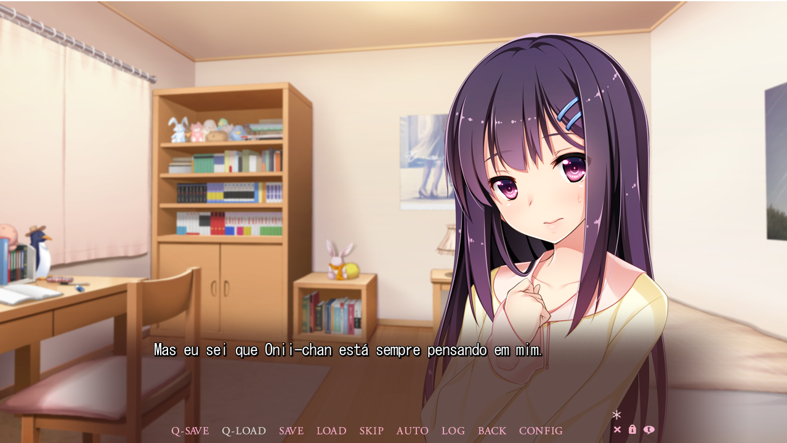
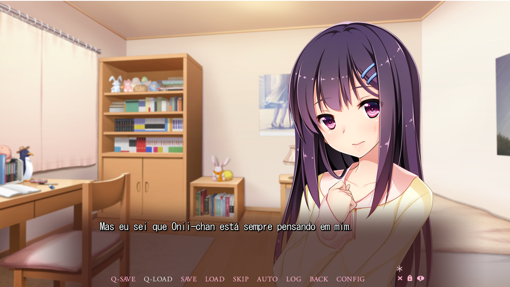

Você sabia? Pessoas com mãos frias tem um coração quente
- Nesse jogo existem cinco heroínas, primeiro a estudante transferida do Canadá, Bethly. Ela adora pintar, mas só sabia o básico do japonês antes de vir para o Japão.
Em seguida, tem a Hinata, uma aluna do segundo ano da escola que também não pode deixar alguém sozinho quando precisa de ajuda. Momiji é colega de classe de Yukito e
se senta ao lado dele na sala de aula. Ela quer chegar ao grande palco das peças de teatro.
Também mirando no topo está a patinadora artística Mizuha, amiga de infância de Yukito. Ele consegue encontrá-la novamente após 2 anos no exterior.
A última das heroínas é sua meia-irmã Yuzuki, que de alguma forma se sente distante. Mas talvez seja porque faz apenas um ano desde que ela e sua mãe foram morar com eles.
 
